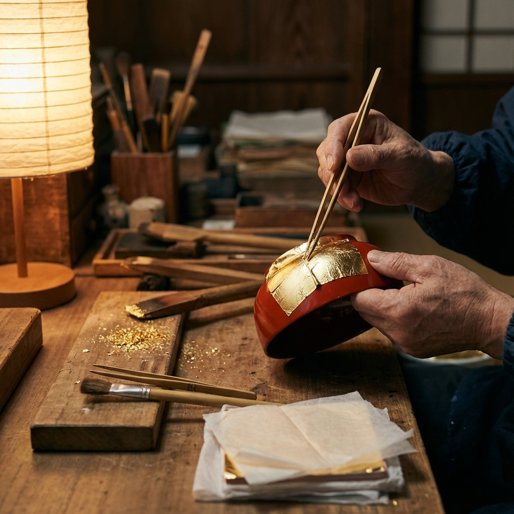

TOUR PICKUP
モニターツアーピックアップ
石川県の魅力を体験できる、厳選されたモニターツアーをご紹介します。
伝統文化から自然体験まで、あなたにぴったりのツアーが見つかります。

人気
能登の絶景巡り 白米千枚田と輪島朝市
世界農業遺産に認定された白米千枚田の絶景と、輪島朝市での地元グルメを満喫。能登の自然と文化を体感する1泊2日の旅。
 体験型
体験型
金沢伝統工芸体験 金箔貼り＆加賀友禅染め
金沢の誇る伝統工芸を実際に体験。職人の指導のもと、金箔貼りと加賀友禅染めにチャレンジ。ひがし茶屋街散策も満喫。
 癒し
癒し
加賀温泉郷で極上の癒し 山代・山中温泉巡り
開湯1300年の歴史を誇る加賀温泉郷で、心身ともにリフレッシュ。名湯巡りと地元食材を使った懐石料理を堪能する2泊3日。
 アクティブ
アクティブ
霊峰白山登山と高山植物観察トレッキング
日本三名山のひとつ、霊峰白山への登山ツアー。高山植物の観察や絶景を楽しみながら、山頂を目指す充実の2泊3日。
 グルメ
グルメ
日本海の幸を堪能 能登グルメツアー
新鮮な海の幸を存分に味わう美食の旅。能登牡蠣、のどぐろ、甘エビなど、日本海の恵みを堪能する1泊2日のグルメツアー。
定番
金沢名所めぐり 兼六園・金沢城・21世紀美術館
金沢の定番観光スポットを効率よく巡る充実の日帰りツアー。日本三名園の兼六園や金沢21世紀美術館など、見どころ満載。